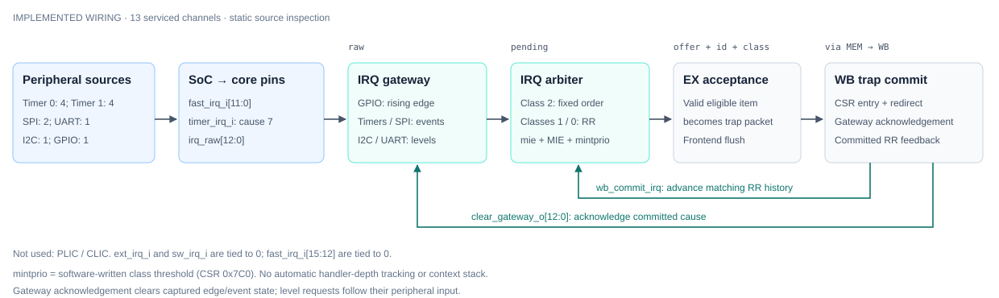

The G3.4 architecture record: the SoC uses neither a PLIC nor a CLIC, and interrupts travel from six peripheral instances over the direct core ports into a 13-channel gateway and a three-class arbiter inside the core. This page holds the decision, the block contracts and the list of what is absent. The per-channel map, the take/return path and the test plan are in G3_IRQ_ARCH_and_TB.html.
G3_core_interrupts.html and G3_vf_interrupt_verification.html are retained as archived copies under superseded/; their upstream originals under ips/documentation/html/ are unchanged. The maintained CJ review package remains at documentation/signoff/cj_review.
Decision. Interrupts are delivered over the direct core ports timer_irq_i and fast_irq_i. No external interrupt controller is instantiated. The subsystem ties ext_irq_i (mip[11], MEIP) and sw_irq_i (mip[3], MSIP) to zero (riscforge_soc_subsystem.sv:1294-1295), so there is no controller port left to attach a PLIC to without a wiring change, and the CLIC sources present in ips/clic-master/ are instantiated nowhere in the SoC. EXISTS
Rationale. The project direction favours a short, simple interrupt path over richer runtime reconfigurability. A single-hart MCU with a fixed peripheral set does not need PLIC priority reassignment, claim/complete ID delivery or CLIC table vectoring, and the direct path keeps the decision inside the core instead of adding a bus transaction to the entry sequence. This is an architecture tradeoff statement only: no latency, frequency or area advantage is claimed, and no comparative measurement was run.
| Capability | With PLIC or CLIC | With the implemented direct path |
|---|---|---|
| Runtime per-source priority | Programmable per source | Fixed by class and channel order; only the class threshold is writable |
| Interrupt identification | Claim/complete read returns the source ID | mcause carries the cause; no claim register |
| Vectoring | CLIC table or PLIC-driven dispatch | mtvec direct; the vectored datapath exists but its mode field cannot be written (section 4) |
| Pre-emption depth | Multiple levels with saved state in the controller | One mepc, mcause and MPIE set; nesting is a firmware protocol |
| Reconfigurability retained | Full | Per-cause mie, global mstatus.MIE, 2-bit mintprio threshold, hardware round-robin history |
Disposition scope. This is the G3.4 disposition: PLIC and CLIC are not used under the stated project direction, and the direct in-core interface is chosen. The supplied workbook cell is unchanged and blank; this record is not an approval and infers no approver. The standalone CLIC RTL remaining in the tree is not integration evidence.
Two blocks sit between the peripherals and the pipeline: irq_gateway and irq_arbiter. Both are implemented. The pipeline side is a contract with EX accept and WB commit, not a separate interrupt block.
irq_gateway.v)The gateway vector is 13 bits: bit 0 is cause 7 and bits 12:1 are causes 27:16 (irq_gateway.v:2). top.v:207 builds it as {fast_irq_i[11:0], timer_irq_i}. Capture depends on the per-bit mode constants in top.v:208-209: edge_mode = 13'h0002 (GPIO only) and event_mode = 13'h1fe9; a bit in neither mask is treated as a level.
| Regime | Sources | Capture | Effect of the gateway clear strobe |
|---|---|---|---|
| Edge | GPIO (bit 1) | Rising edge against a registered copy of the raw line | Latch clears; a new interrupt needs a new rising edge |
| Event | Cause 7 and causes 18, 20-27 (bits 0, 3, 5-12) | Every cycle the raw line is high sets the latch | Latch clears; a held line re-sets it on the next cycle |
| Level | I2C (bit 2), UART (bit 4) | None; the pending output is the raw level | No effect; only the peripheral or firmware can drop it |
pend_q <= capture | (pend_q & ~clear_i) (irq_gateway.v:14-27). A same-cycle capture outranks the clear, so a new request is not lost and repeats coalesce.cause-15 for causes 16-27 (wb_trap_mret_commit_controller.v:80-92). It is a commit consequence and always precedes the handler's first instruction.clk_i cycle on a latched source; narrower pulses are not guaranteed to be seen.mip bits fed by the gateway read pend_o, not the raw pin (top.v:550-551).irq_arbiter.v)The arbiter is combinational from pend, mie, mstatus.MIE and mintprio to irq_pending_o, irq_id_o and irq_class_o. Each step is a separate contract.
| Step | Contract | Source |
|---|---|---|
| A1 Qualify | active = pend_i & {mie_i[27:16], mie_i[7]} & {13{mstatus_mie_i}} | irq_arbiter.v:20-21 |
| A2 Rotate | Round-robin pointers advance only on wb_commit_i, using the committed cause | irq_arbiter.v:24-40 |
| A3 Select | Class 2 fixed order; classes 1 and 0 cyclic from their pointer | irq_arbiter.v:42-97 |
| A4 Rank | Class 2 over class 1 over class 0 | irq_arbiter.v:72-97 |
| A5 Gate | The single winner is offered only if (class + 1) > mintprio | irq_arbiter.v:99-100 |
mintprio | Classes that can raise irq_pending_o |
|---|---|
| 0 (reset) | 0, 1, 2 |
| 1 | 1, 2 |
| 2 | 2 only |
| 3 | none |
csr_regfile.v)mie: write mask 32'hFFFF0888 (csr_regfile.v:187), covering bits 31:16, 11 and 7. Bits 15:12 and 10:8 are not writable.mstatus.MIE: bit 3, the global gate. Trap entry clears MIE and saves it in MPIE; MRET restores it (csr_regfile.v:172-179).mintprio: 2 bits at 0x7C0, reset 0, not modified by trap entry or MRET. It is the only interrupt-related custom CSR that is decoded; mintlvl (0x7C1) and mintctl (0x7C2) are not.mtvec: the write preserves bits 1:0 (csr_regfile.v:188) and reset value is 0, so the mode field stays in direct mode (section 4).EX accepts an interrupt only when it holds a valid instruction that carries no exception (execute_cycle.v:459). That instruction does not execute: it becomes a trap packet with mcause = {1, id} and its own PC in mepc, and the frontend is flushed. At WB the packet commits as a trap, which writes mcause/mepc, clears MIE, redirects fetch, advances the round-robin pointer for the committed cause and issues the one-hot gateway clear. MRET restores MIE from MPIE and redirects to mepc (wb_trap_mret_commit_controller.v:64-132). Acceptance, packet construction and the return sequence are detailed in G3_IRQ_ARCH_and_TB.html section 6.
Nesting and latency limits. Trap entry clears global MIE, so IRQs are masked until firmware re-enables it. A handler may then be interrupted by requests allowed by mie and mintprio; software must save and restore the overwritten trap state and execution context. There is no automatic nesting stack or depth gate. Unit checks that trap/MRET preserve mintprio do not verify that firmware protocol. Divider abort is implemented, but no sub-four-cycle entry-latency guarantee is established. See gating, nesting and evidence limits.
Thirteen channels come from six peripheral instances: Timer 0 (four), Timer 1 (four), SPI (two), UART (one), I2C (one) and GPIO (one). The subsystem drives fast_irq_i as {4'b0, twelve lines} (riscforge_soc_subsystem.sv:1280-1292); the top four bits are zero. EXISTS
| Cause | Source signal | SoC port | Mode | Class |
|---|---|---|---|---|
| 7 | timer0_irq_o[1] Timer 0 ch0 compare | timer_irq_i | event | 2 |
| 16 | gpio_global_interrupt_o | fast_irq_i[0] | edge | 0 |
| 17 | i2c_interrupt_o (irq_flag && IEN) | fast_irq_i[1] | level | 0 |
| 18 | spi_events_o[0] threshold (s_int_tx | s_int_rx) | fast_irq_i[2] | event | 1 |
| 19 | uart_int_o (IIR-qualified) | fast_irq_i[3] | level | 1 |
| 20 | timer0_irq_o[0] Timer 0 ch0 overflow | fast_irq_i[4] | event | 2 |
| 21 | timer0_irq_o[2] Timer 0 ch1 overflow | fast_irq_i[5] | event | 2 |
| 22 | timer0_irq_o[3] Timer 0 ch1 compare | fast_irq_i[6] | event | 2 |
| 23 | timer1_irq_o[0] Timer 1 ch0 overflow | fast_irq_i[7] | event | 2 |
| 24 | timer1_irq_o[1] Timer 1 ch0 compare | fast_irq_i[8] | event | 2 |
| 25 | timer1_irq_o[2] Timer 1 ch1 overflow | fast_irq_i[9] | event | 2 |
| 26 | timer1_irq_o[3] Timer 1 ch1 compare | fast_irq_i[10] | event | 2 |
| 27 | spi_events_o[1] end of transfer | fast_irq_i[11] | event | 1 |
Only causes 17 and 19 are level-sensitive. The full per-channel table adds the clear/re-arm behaviour and the peripheral evidence, and is kept in one place: G3_IRQ_ARCH_and_TB.html section 2. Lines outside this set do not reach the arbiter: fast_irq_i[15:12] are tied to zero and top.v:207 uses only bits 11:0, so mip[31:28] is constant 0; ext_irq_i and sw_irq_i feed mip directly but are outside the arbiter mask, so they can be read and can never trap; the subsystem ties both to 0.

mip[11] or mip[3] to the arbiter). Feedback is the one-hot gateway clear and the commit-qualified round-robin advance. Not shown: peripheral register clearing, firmware, nesting, latency. Spec: irq_source_map.spec.json, validated by diagram_tool.py; Mermaid form: irq_source_map.md.| Item | State | What the sources show |
|---|---|---|
| PLIC, CLIC | EXISTS as decision | Not used. The direct path is the implemented interface; the standalone CLIC RTL is instantiated nowhere and is not integration evidence. |
mintlvl 0x7C1, mintctl 0x7C2 | SPECIFIED only | Not decoded in csr_regfile.v; no register exists at those addresses. |
| Hardware nesting: depth counter, shadow stack, automatic level save | SPECIFIED only | No such object in the RTL. Nesting is a firmware protocol: save mepc/mcause, raise mintprio, set MIE. |
Vectored mtvec mode | OPEN | The target datapath exists (wb_trap_mret_commit_controller.v:98-103), but the CSR write preserves mtvec[1:0] and reset is 0, so mode 01 cannot be reached (csr_regfile.v:188). |
| AON watchdog, cause 28 | SPECIFIED only | The block is instantiated nowhere, its host port is TileLink rather than APB, soft_rst_ni is driven by nothing in the SoC, and there is no cause-28 slot in the vectors. |
| MEIP / MSIP delivery | EXISTS as wiring | Readable in mip, never delivered: the arbiter masks only mie[27:16] and mie[7]. The subsystem ties both inputs to 0; software can still set mip[3] by writing it, which also never traps. |
fast_irq_i[15:12] | EXISTS as constant | Tied to zero by the subsystem and unused by top.v; mip[31:28] reads 0 and their mie bits have no effect. |
| Claim | State | Basis |
|---|---|---|
| 13-channel gateway with edge/event/level capture and commit-time clear | EXISTS | RTL inspection; unit run in tb_irq_restructure.sv |
Three-class arbiter, commit-driven round robin, mintprio threshold | EXISTS | RTL inspection; unit run in tb_irq_restructure.sv |
Take in EX, commit at WB, MRET return, direct mtvec | EXISTS | RTL inspection; no dedicated retained result on this page |
| Peripheral event reaches its handler (G3.6), SoC end-to-end (G6) | OPEN | No retained SoC-level result; unit and core-level runs are not E2E |
| Rev B 13 versus restructured RTL | OPEN | Plan has not been reconciled to the 13 on-disk channels; differences listed in G3_IRQ_ARCH_and_TB.html section 12 |
Evidence. The canonical unit record and coverage bins are G4.12 unit verification and G4.12 unit coverage; this page does not restate them as a pass. The retained unit log is Verification/artifacts/irq_restructure/irq_coverage_final_sim.log (xsim, 2026-10-29), covering arbitration snapshots plus gateway, mip/mie, mintprio and commit checks at block level.
mintprio write ordering, and spurious/clear-ordering cases — are defined with their evidence gaps in G3_IRQ_ARCH_and_TB.html.Baseline identity. The workspace is not a git checkout, so the diagram baseline is a content hash over the sources named in the spec: worktree-sha256:1f0f44a12a3c2c4d48d2cbb734f73ecce3ac770036423694df3f8e0bde456a90. If any of those files change, the diagram must be revalidated with diagram_tool.py.
riscv_core/rtl/irq_gateway.v, irq_arbiter.v, csr_regfile.v, wb_trap_mret_commit_controller.v, top.v, execute_cycle.v.RTL_SOC/riscforge_soc_subsystem.sv:1278-1296.apb_timer-master/rtl/timer.sv, spi_master_ip/spi_master/apb_spi_master.sv, apb_i2c-master/apb_i2c.sv, apb_uart-main/rtl/apb_uart.sv, gpio-master/gpio.sv.documentation/RISCFORGE IRQ Architecture.html, documentation/html/core_interrupts.html, documentation/html/vf_interrupt_verification.html.